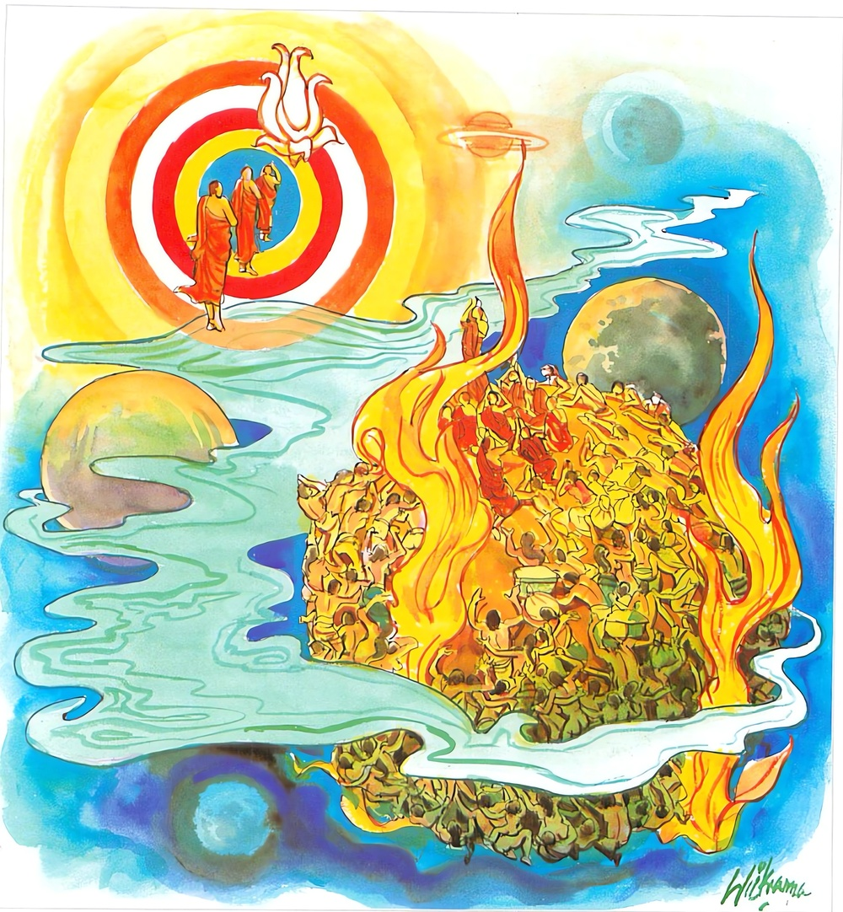
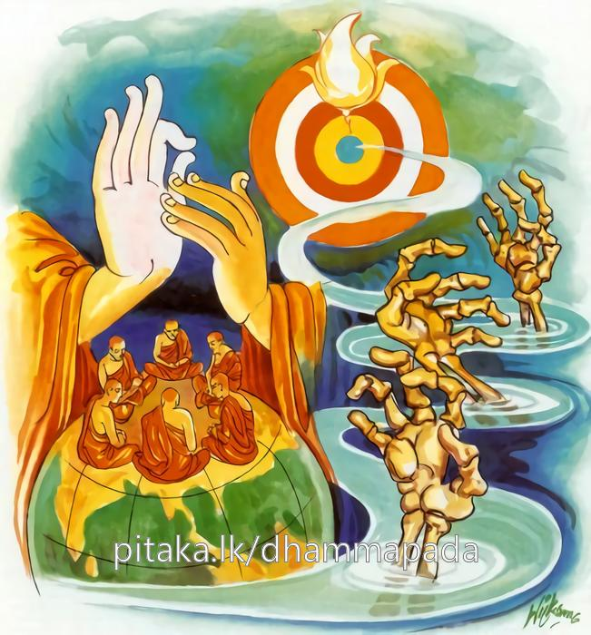

6-10 නිදිකිරමින් බණ ඇසූ මිනිස්සු
මෙම කතාව ධම්මපද අටුවාවෙන් ද කියවන්න.
අප්පකා තෙ මනුස්සෙසු යෙ ජනා පාරගාමිනො
අථායං ඉතරා පජා තීරමෙවානුධාවති.
මිනිසුන් අතුරෙහි යම් ජනකෙනෙක් නිර්වාණපාරයට (නිවන් නැමැති පරතෙරට) යන සුල්ලෝ ද, ඔහු ස්වල්පය හ. වැලි ඔවුන් කෙරෙන් අන්ය වූ (නිවනට නොයන සුලු) මේ සත්තවසමූහයා වූ කලි (සත්කාය සංඛාත) මෙ තෙර ම දිවැ ඇවිදිනේ ය.

යෙ ච ඛො සම්මදක්ඛාතෙ ධම්මෙ ධම්මානුවත්තිනො
තෙ ජනා පාරමෙස්සන්ති මච්චුධෙය්යං සුදුත්තරං.
යම් නුවණැති කෙනෙක් මොනොවට දෙසන ලද පර්ය්යාප්තිධර්මයෙහි ධර්මානුවර්තී වෙත් ද (දහම් අනුව පිළිපදින්නෝ වෙත් ද), ඒ ජනයෝ තරණයට දුෂ්කර වූ, කෙලෙස්මරුට වාසස්ථාන වූ ත්රෛභූමක වෘත්තය ඉක්මැ (නිර්වාණ නමැති) පරතෙරට පැමිණෙන්නාහ.

සැවැත් නුවර එක් වීථියක වැසෝ කට්ටි කට්ටි ව පෙරවරුයෙහි දන් දී එදා මුළු රැය බණ අසන්නට පටන් ගත්හ. එහෙත් ඔවුහු එහි හිඳ මුළු රැය බණ ඇසීමෙහි අපොහොසත් වූහ. කෙනෙක් කාමාශාවෙන් මැඩුනෝ පෙරළා ගෙවලට ගියහ. කෙනෙක් කෝපයෙන් අඬ දබර කළහ. තවත් කෙනෙක් සිත කය දෙක්හි මැලි කමින් නිදි කිර කිරා හුන්හ. පසු දා දම්සබාවට රැස් වූ භික්ෂූන් වහන්සේලා එගැන කතා කරමින් ඉන්නා අතර බුදුරජානන් වහන්සේ එහි වැඩි සේක්, ඒ පුවත දැන වදාරා ‘මහණෙනි! ඕක එතරම් අරුමයෙක් නො වේ, ඔය මිනිස්සු බොහෝ සේ භවයෙහි ඇලී ගැලී වසන්නෝ ය, නිවන් යන්නෝ ඉතා ටික දෙනකැ’ යි අනුසන්ධි ගළපා මේ ධර්මදේශනාව කළ සේක:-
අප්පකා තෙ මනුස්සෙසු යෙ ජනා පාරගාමිනො,
අථායං ඉතරා පජා තීරමෙවානුධාවති.
.
යෙ ච ඛො සම්මදක්ඛාතෙ ධම්මෙ ධම්මානුවතතිනො,
තෙ ජනා පාරමෙස්සන්ති මච්චුධෙය්යං සුදුත්තරන්ති.
මිනිසුන් අතුරෙහි යම් කෙනෙක් පරතෙරට යන සුලු ද, එබඳු මිනිස්සු ස්වලපයහ. මේ අන්යප්රජා තොමෝ මෙතෙරට ම නැවැත නැවැත දුවයි.
යම් කෙනෙක් මැනැවින් දෙසූ ධර්මවිෂයයෙහි ධර්මය අනුව පවත්නෝ ද, ඔවුහු තරණයට ඉතා දුෂ්කර වූ ත්රෛභූමිකවෘත්තය (ඉක්මවා) නිවනට පැමිණෙන්නාහ.
අප්පකා තෙ මනුස්සෙසු යෙ ජනා පාර ගාමිනො = මිනිසුන් අතුරෙහි යම් කෙණෙක් පරතෙරට යන සුලු ද ඔවුහු ටික දෙනෙකි.
අප්පක, ශබ්දය, සාවශේෂ, නිරවශෙෂ යන දෙයරුතෙහි වැටේ. අප්පිච්ඡා, යනාදි තන්හි නිරවශෙෂයෙහි ය. කැමැත්තක් කැල ම නැත යන අරුති. මෙහි ආයේ සාවශෙෂයෙහි ය. මුළුමනින් නැති බවෙක් මෙයින් නො කිය වේ. තෙ, යන්න, යෙ, යන්න හා සම්බන්ධ වේ. කුසල් අකුසල් උපදවන්නේ ජන, නමි. කුසලා කුසලං ජනෙතීති = ජනො’ යනු විවෘති යි. පාරගාමීහු, යි කියන ලද්දෝ නිවනට යන්නෝ ය. ‘පාරං වුච්චති අමතං නිබ්බානං’ නිවන පාර නැමැ යි මින් කියන ලද ය. සසර දුක් තැවුම් සංසිඳවන්නට පොහොසත් නු යි නිවන පාර, නම් වේ. ‘පාරෙති සක්කොති සංසාරදුක්ඛ සන්තාපං සමෙතුන්ති = පාරං’ යනු ඒ කී ලෙස ය . ‘පහතා සංසාර චක්කස්ස අරා එතස්මාති වා = පාරං’ සසර සකේ අර සිඳින ලදනු යි කියා හෝ නිවන පාර යි කියනු ලැබේ. නිර්වාණය පඤ්ච උපාදානස්කන්ධසඞ්ඛ්යාත වූ ලෝකය හැර දමා ඉන් එතෙර ව ලැබිය යුතු බැවින්, පාර නම් වී ය යනු මෙහි ආශය වේ. ඒ මේ පාරසඞ්ඛ්යාතනිර්වාණයට යන සුල්ලෝ පාරගාමී නම් වෙත්. ස්වකීය වූ ආත්මභාවසඞ්ඛාත වූ රූපූපාදානක්ඛන්ධ - වෙදනූපාදානක්ඛන්ධ - සඤ්ඤූපාදානක්ඛන්ධ - සඞ්ඛාරූපාදනක්ඛන්ධ - විඤ්ඤාණූපාදානක්ඛන්ධ යන පංචවිධ උපාදානස්කන්ධයන්හි පරිඤ්ඤා-අභිසමය-පාරිපුරි යන මොවුන්ගේ වශයෙන් ද, මෙ කියූ උපාදානස්කන්ධයන්ට හේතු වූ තෘෂ්ණාවෙහි ද, ඔවුන්ගේ නොපැවැත් ම ලකුණු කොට ඇති නිරෝධයෙහි ද, නිරෝධගාමිනී ප්රතිපදාවෙහි ද පහාන - සච්ඡිකිරියා - භාවනා - අභිසමය - පාරිපුරි යන මොවුන්ගේ වශයෙන් ද නිවනට යන්නෝ ය පාරගාමීහු. “සකඅත්තභාවසඞ්ඛාතෙසු පඤ්චසුඋපාදානක්ඛන්ධෙසු පරිඤ්ඤාභිසමයපාරිපූරිවසෙන ච තතොයෙව තෙසං හෙතුභූතෙ සමුදයෙ තදප්පවත්තිලක්ඛණෙ නිරොධෙ නිරොධගාමිනියා පටිපදාය ච පහාණසච්ඡිකිරියා භාවනාභිසමයපාරිපූරිවසෙන පාරඞ්ගච්ඡන්තා නාම” යනු අර්ත්ථකථා ය “සීලසමාධිපඤ්ඤා විමුත්තිආදිනං එතෙසං සීලාදිධම්මානං අත්තනො සන්තානෙ අරහත්තසමධිගමෙන අනවස්සෙතො නිබ්බත්තපාරිපූරියා පාරං පරියන්තං නිබ්බානං ගච්ඡන්තීති = පාරගාමිනො” යනු ද බැලිය යුතු ය. පාරගාමී සත්වයෝ ඉතා ටික දෙනෙකි, යනු මුල් කොටසේ අදහසය.
අථ අයං ඉතරා පජා = නැවැත මේ අන්ය වූ ප්රජා තොමෝ.
පජා, යන්නෙන් මුළු සත්ලොව ම ගැණේ. ‘පජාති සත්ත ලොකස්ස පරියාය වචනමෙතං’ යි ඒ කීහ. එහෙත් මෙහි අන්යාර්ත්ථවාචක වූ ඉතරා, යන්න විශේෂණව යෙදීමෙන් නිවනට යන්නන් හැර අන්ය වූ සත්වලෝකය කිය වේ.
තීරං එව අනුධාවති = මෙතෙරට ම පුන පුනා දුව යි.
පියවි මුහුදට එ ගොඩ මෙ ගොඩ දෙකක් වන්නා සේ සසර සයුරට ද එ ගොඩ මෙ ගොඩ දෙකක් වේ. සසර සයුරේ එගොඩ එනම් නිවන යි. උපාදානස්කන්ධයන්ගෙන් එතෙර වූ තැන යි. සංස්කාරයන්ගේ නැවැත නො ඉපැත්ම යි. මෙ ගොඩ උපාදානස්කන්ධලෝකය යි. සසර සයුරේ තීරය යි කියන, සත්කායට ම හෙවත් ආශ්රව සහිත වූ උපාදානයන්ට ගෝචර වූ ස්කන්ධයන්ට ම නැවැත නැවැත උත්පත්ති වශයෙන් දුව යි. භවයෙහි නැවත නැවත උපදි යි.
යෙ ච ඛො සම්මාඅක්ඛාතෙ ධම්මෙ = යම් කෙනෙක් වනාහි මැනැවින් දෙසූ ධර්මයෙහි.
‘එකන්නනීය්යානිකං කත්වා භාසිතෙ, සම්මා අවිපරීතතො අක්ඛාතා’ යනාදිය ‘සම්මදක්ඛාතා, යන්නට කළ අර්ත්ථ කථාපාඨ කිහිපයෙකි. කොටින් කිය යුත්තේ නිවනට අනුරූප වූ පිළිවෙතත් පිළිවෙතට අනුරූප වූ නිවනත් කියු බැවින් බුද්ධධර්මය සම්මදක්ඛාත වූ බව ය. ප්රතිපත්තිය මේ ය යි කියන මෙහි පර්ය්යාප්තියෙහි කිසිවිටෙකත් අර්ත්ථවිපර්ය්යාසයෙක් නො වේ. අන්යයන් අන්තරායකර ය යි කියූ ධර්ම, අන්තරායකර නො වන බැවින් ඒ අන්යතීර්ත්ථකාදීන්ගේ ධර්මයෙහි අර්ත්ථවිපර්ය්යාසය පෙණේ. ඔවුන් නෛර්ය්යාණිකය යි කියූ ධර්ම, නෛර්ය්යාණික නො වේ. එහෙයින් ඔවුන්ගේ ධර්මය දුරක්ඛාත ය. බුද්ධධර්මය සම්මදක්ඛාත ය. කියූ අර්ත්ථයෙහි වෙනසක් කිසිවිටකත් නො වන බැවිනි.
ධම්මානුවත්තිනො = ධර්මය අනුව පවත්නෝ වෙත් ද.
මනා කොට වදාළ ධර්මය අසා දැන එයට සුදුසු පිළිවෙත් පුරන්නෝ, එයට අනුව පවත්නෝ ධර්මානුවර්තීහු නම් වෙතෙ මැනැවින් දෙසූ ධර්මයෙහි යම් ගුරුවරයෙක් යම් අතවැස්සකු සමාදන් කරවා ද, හික්මවා ද ඒ ගුරුවරයාත් ගුරුවරයා විසින් සමාදන් කරවන ලද ඒ අතවැස්සාත් දෙදෙනා ම ධර්මානුවර්තකයෝ ය.
තෙ ජනා පාරංඵස්සන්ති මච්චුධෙය්යං සුදුත්තරං = ඒ ජනයෝ තුමූ තරණයට අතිදුෂ්කර වූ ත්රෛභූමිකවෘත්තය (ඉක්මවා) නිවනට පැමිණෙන්නාහ.
මනාකොට දෙසූ ධර්මය අසා තදනුවර්තක ව දිවි ගෙවන මිනිස්සු සාමාන්ය ජනයා විසින් තරණය කරණු තබා, සිතනු බැරි ත්රෛභූමිකවෘත්තය තරණය කරණ බව ය මින් වදාළෝ. නිවන් ලබත් ය යනු එහි තේරුම ය. මච්චු නම්, ක්ලේශමාරතෙමේ ය. කෙලෙස් මරුට තැන් වූයේ කර්ම, ක්ලේශ, විපාක යන තුනය. මෙතුන ත්රෛභූමිකවෘත්ත නම්. [1]
මේ ධර්ම දේශනාවගේ අවසානයෙහි බොහෝ දෙන සෝවන් ඵලාදියට පැමිණියෝ ය.
ධර්මශ්රවණ වස්තුව නිමි.
-
3-1 ‘මාරධෙය්යං’ යන්න බලනු. ↑